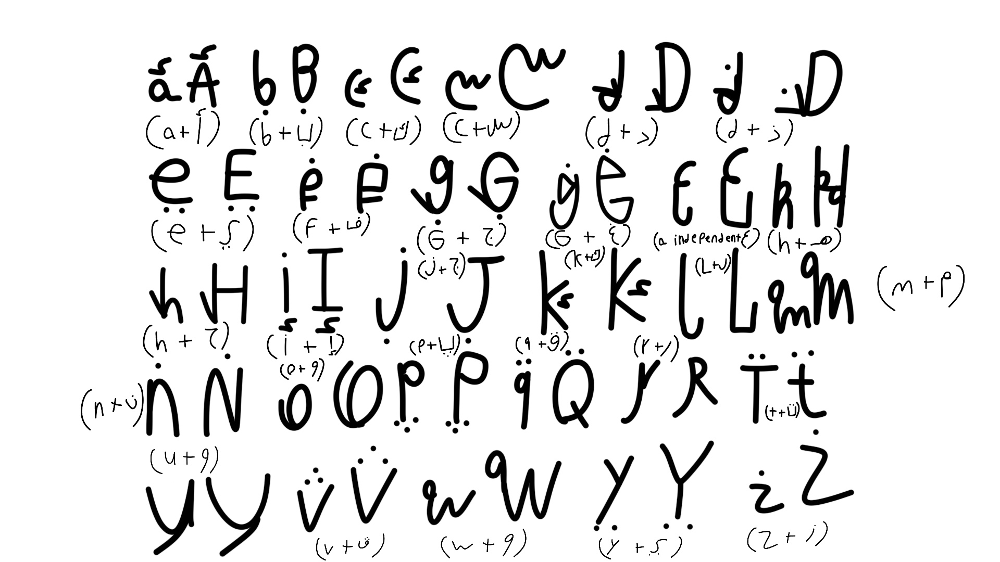

Published
So i've heard of something called Constructed Languages (conlang for short).
a Conlang is a type of language made for a specific purpose, especially fiction.
the best example of a Conlang is Toki Pona, a Conlang created by a Canadian linguist named Sonja Lang that has only around 120 words.
but i wanna make a Conlang that is a mix of English & Arabic called Anglo-Arabic by taking a letters in both languages & then mixing it together! so let's go make one!
First things First, i wanna make the Alphabet! Here's what it would look like:
Image Licensed under CC0
PAGE UNDER CONSTRUCTION